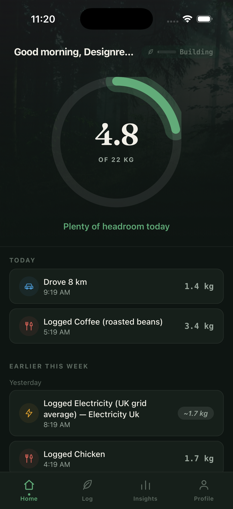
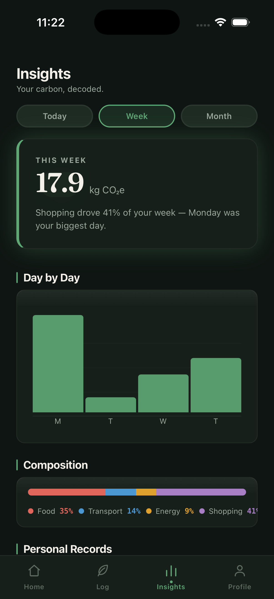
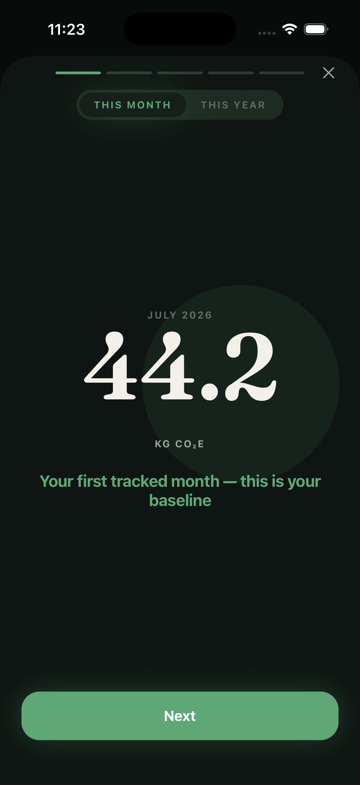
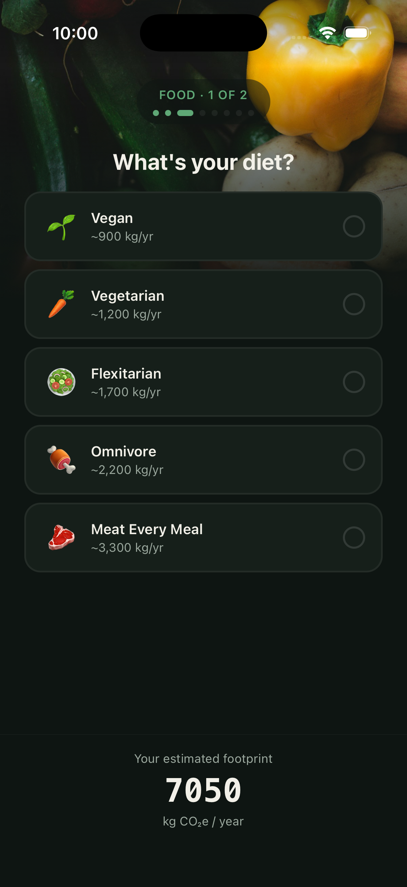

A blending engine for a reactor that destroys forever chemicals.
AxNano destroys PFAS — the “forever chemicals” in drinking water — using supercritical water oxidation. I came in through a Duke practicum, then joined as product manager.
The reactor was being fed one waste stream at a time. I built AxOptimise: a Python optimization engine behind an operator dashboard that blends compatible streams into a single lowest-cost run, subject to real chemistry constraints — pH, fluoride acid loading, neutralization. It returns a feed plan in under a minute. Planning used to take hours.
My first model claimed 47%. Before it reached a customer I commissioned an audit of my own work. It found five defects. I fixed them, revalidated against 150+ pages of DoD and EPA field reports, and published the corrected figure. I still believe 43% is right — and it’s a number I can defend in a room, which the 47% wasn’t.
What else I own here
- Memory OS
- An AI-native project knowledge base for a $1M+ five-organization industrial pilot. Email and decisions land in a schema-enforced store instead of scattered threads. It surfaced a critical process deviation and three blocking dependencies before they hit the schedule.
- Next
- Scoping a model that infers waste composition rather than trusting the manifest — manifests are frequently wrong, which is the real constraint on scheduling.
- Redacted
- Client names, deployment sites, and internal cost figures are omitted deliberately — the pilot is under confidentiality. Happy to discuss my role and reasoning directly.
Every carbon app makes you log by hand. That’s why nobody keeps using them.
Veridian started as a manual logger, same as everything else in the category. Then I tore down four rivals — Klima, Joro, Greenly, Miles. All of them push the data entry onto the user. Manual logging isn’t a feature gap; it’s the adoption failure.
So I repositioned around automatic detection — an autopilot, not a logbook. Flat pricing on purpose, to stay clear of the offset-resale model that quietly killed comparable apps.




Real screens from my own use — not seed data, not mockups.
The decisions I’d defend
- Momentum, not streaks
- Punitive streaks drive guilt-based churn — miss one day, delete the app. I built a momentum model that forgives a missed day instead of resetting you to zero.
- Confidence, not theater
- The emissions model scores its own confidence and shows it. An estimate labelled as an estimate earns more trust than a fake-exact number.
- Battery as a constraint
- Seven-day motion history with no measurable battery drain, and policy-safe Android activity recognition. An autopilot that eats your battery gets uninstalled no matter how good the model is.
- Status
- MVP built, repo private, public launch targeted later this year. A portfolio piece and an intended company — I’m building it like the latter.
Three years turning a bank’s data exhaust into product.
Promoted in just over a year. I authored the business case that moved 130+ ETL workflows off on-premise Hadoop onto AWS, unified four siloed dashboards into a single Tableau platform, and automated a client reporting pipeline that had eaten 50+ hours every month for a decade.
How the migration case got approved
- The problem
- The “Keeping the Lights On” dashboard ran live every two hours for 20+ teams across four countries, stitched from six data sources. The Hadoop estate underneath was aging and the scale ceiling was in sight.
- The approach
- A written build-vs-buy case with the annualized number attached, then alignment across product and engineering before a line of migration code was written.
- Also shipped
- A propensity-score dashboard telling the bid team which clients to call, and the bank’s first travel-emissions tracker — two years before I founded a carbon company.
Personality from 8,675 tweets
Predicted MBTI type from tweet text using TF-IDF features and an XGBoost classifier. Peer-reviewed and published.
Air quality × demographics
Filed a right-to-information request to get official data in three days, then mapped pollution against demographics for Mumbai’s M-Ward. Advanced in DeepBlue.
Solar system on NASA data
Built a navigable solar system in Unreal Engine from real NASA datasets. Presented at the DefTech hackathon in Azerbaijan.